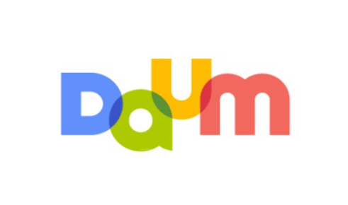

다음(영어: Daum)은 대한민국의 포털 사이트이다.
"한메일"(현재의 다음 메일)이라는 이름으로
대한민국 최초의 웹 메일 서비스를 열었으며,
이 밖에도 온라인 커뮤니티 서비스 "다음 카페", 뉴스 서비스 "다음 뉴스" 등을
서비스하고 있다. 운영 업체는 본래 다음커뮤니케이션이었으나
2014년 10월, 합병하여 다음카카오로 사명을 변경하였다가
2015년 9월, 카카오로 사명을 변경하였다.